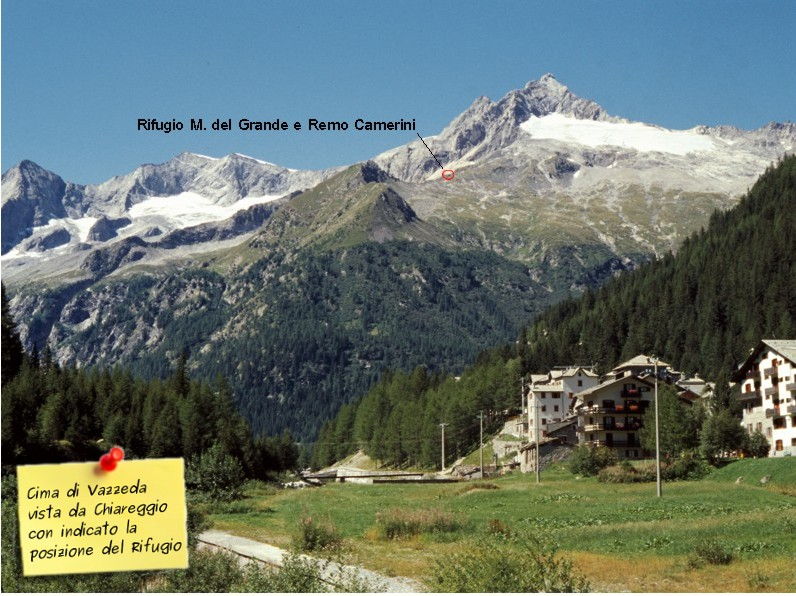
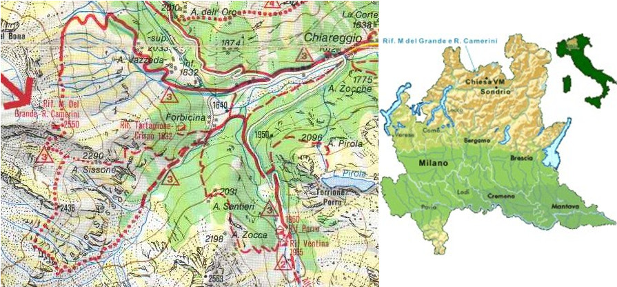

Mappe e percorsi
ATTENZIONE! Verificate il periodo di apertura prima di pianificare la vostra visita al rifugio M. Del Grande - R. Camerini.
Se volete visitare il rifugio durante il periodo di chiusura, visitate prima la sezione Bivacco
Percorsi
Via di Accesso
Da Chiesa Valmalenco seguire le indicazioni per Chiareggio.
Oltrepassate le "tormentate" cave di pietra di Chiesa si arriva a San Giuseppe,
e proseguendo sempre in direzione dell'alta valle si arriva a Chiareggio.
La macchina può essere lasciata o all'inizio del paese prima dell'Albergo Genziana
in un parcheggio sulla destra della strada, oppure lungo il fiume Mallero.
Nel primo caso si dovranno percorrere circa 20 minuti a piedi per raggiungere il
parcheggio lungo il fiume (cosa consigliabile a chi visita Chiareggio per la prima volta),
da cui parte il sentiero per il rifugio Del Grande Camerini. Nel caso si decida
di parcheggiare l'auto lungo il fiume, occorre oltrepassare il paese di Chiareggio,
ed inoltrarsi lungo una strrada sterrata oltrepassando il "Pian del Lupo"
e seguendo le indicazioni per il parcheggio.
Lasciata la macchina al parcheggio realizzato sui resti dell'alluvione del 1987,
risalire il fiume lasciando alcune case sulla destra (indicazioni per il rifugio Tartaglione).
All'interno del bosco mantenere la destra fino ad arrivare ad un ponticello sul Mallero,
al di là del quale si trovano le indicazioni per vari rifugi. Da questo punto in poi è
possibile seguire uno degli itinerari descritti di seguito.
ITINERARIO 1: "Sentiero Vazzeda"
Difficoltà: Facile in estate ad eccezione di qualche passaggio che può rivelarsi difficoltoso in caso di torrenti in piena o disgelo tardivo.
Tempo di salita: 3 ore
Segnaletica: Triangoli e bolli gialli dell'Alta Via della Valmalenco
Dislivello: 1000 metri
Descrizione: Dopo il ponticello seguire il cartello che indica per l'Alpe Vazzeda Inferiore e Superiore.
Il sentiero si addentra subito nel bosco. Dopo avere attraversato un ponticello fatto con i tronchi
si arriva all'Alpe Vazzeda Inferiore con un alpeggio e delle baite. Da quì si segue sempre il
sentiero e dopo facili roccette si arriva all'alpe Vazzeda Superiore (tralasciare gli evidenti
segni bianco/azzurri che portano al Rifugio del Forno). Da qui dopo una sucessiva salita inizia
il lungo traverso che porta fino a sotto il rifugio dopo avere traversato numerosi corsi d'acqua
che scendono dal ghiacciaio del Vazzeda.
ITINERARIO 2: "Sentiero Val Sissone"
Difficoltà: Facile in estate ad eccezione di qualche passaggio che può rivelarsi difficoltoso in caso di torrenti in piena o disgelo tardivo.
Tempo di salita: 3 ore
Segnaletica: Triangoli e bolli gialli dell'Alta Via della Valmalenco
Dislivello: 1000 metri
Descrizione: Dopo il ponticello seguire il cartello che indica per l'Alpe Vazzeda Inferiore e Superiore.
Il sentiero si addentra subito nel bosco. Dopo avere attraversato un ponticello fatto con i tronchi
si arriva all'Alpe Vazzeda Inferiore con un alpeggio e delle baite. Da quì si segue sempre il
sentiero e dopo facili roccette si arriva all'alpe Vazzeda Superiore (tralasciare gli evidenti
segni bianco/azzurri che portano al Rifugio del Forno). Da qui dopo una sucessiva salita inizia
il lungo traverso che porta fino a sotto il rifugio dopo avere traversato numerosi corsi d'acqua
che scendono dal ghiacciaio del Vazzeda.
ITINERARIO 3: "Sentiero Diretto"
Difficoltà: Più breve ma faticoso poiché sale direttamente. Sconsigliato a chi vuole godersi il panorama, è più che altro un accesso
"di servizio". La segnaletica è scarsa; qualche decina di metri di roccette in prossimità del rifugio richiede attenzione.
Tempo di salita: 2:30 - 3:00 ore a secondo delle condizioni del sentiero (bagnato o asciutto)
Segnaletica: Triangoli e bolli gialli dell'Alta Via della Valmalenco fino alla deviazione segnalata da un cartello metallico con la bandiera bianco/rossa del CAI.
Dislivello: 1000 metri
Descrizione: Dopo il ponticello seguire le indicazioni per il il rifugio Tartaglione
e dopo avere superato un gruppo di baite (località Forbicine), lasciare il sentiero per
il Tartaglione e seguire i simboli gialli dell'Alta Via. Dopo alcuni saliscendi si giunge
alla deviazione (cartello metallico del CAI). Il sentiero si inerpica prima nel bosco e quindi
in un canalone roccioso (attenzione: il canalone non deve essere percorso interamente; poco
oltre la sua metà il sentiero esce sulla sinistra). Si arriva ad un gruppo di baite in un prato
(Alpe Sissone).
Da qui si vede il rifugio, che deve essere il punto di riferimento da qui in poi,
poiché il sentiero diventa poco evidente nell'erba. Si giunge infine alla piccola parete di
roccette (la stessa dell'itinerario n. 2) da superare con arrampicata di primo grado.
Seguendo il costone di sfasciumi si giunge al rifugio.
Mappe
 Clicca qui se vuoi scaricare la mappa più estesa e con maggiori dettagli. (Il file è da 3.5MB)